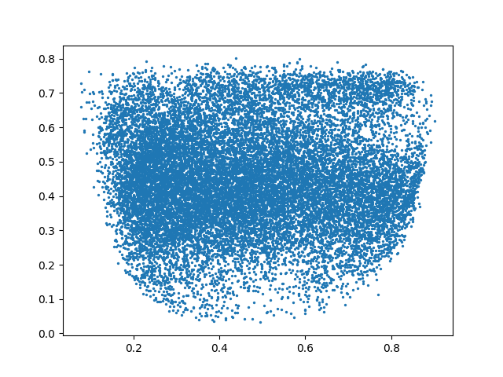

Note
Click here to download the full example code
Create pipeline
Sample file to create a pipeline.
- 

Out:
C:\Users\kelda\Desktop\repositories\virtualenvs\venv-py39-oss1017\lib\site-packages\sphinx_gallery\gen_rst.py:516: DtypeWarning: Columns (3,5,7,9,12,14,15,16,17,18,19,20,21,23,24,25,26,27,28,29,30,33,34,37,40,41,42,43,44,48,49,50,51,52,53,54,55,56,57,61,62,64,66,67,68,69,70,73,74,75,77,79,80,81,82,83,84,85,87,88,89,90,95,96,97,99,101,102,103,104,107,108,110,113,115,117,119,120,121,122,125,126,127,129,130,132,133,134,135,136,137,143,152,153,155,156,157,159,161,162,163,164,165,166,167,168,174,175,176,177,178,182,184,193,197,198,199,200,202,203,207,208,209,213,214,215,218,219,220,221,224,225,226,227,229,232,233,234,235,236,237,238,240,241,242,244,247,250,253,254,255,259,261,262,263,264,265,266,267,268,270,271,272,273,274,275,276,277,278,279,280,281,283,284,285,286,287,288,289,290,291,292,293,294,295,296,297,301,302,303,304,305,307,308,309,310,311,312,313,314,315,317,318,319,320,324,325,326,327,328,330,333,334,335,336,337,338,339,340,343,344,345,346,347,348,349,350,351,352,353,354,355,356,357,358,359,360,361,362,363,364,365,366,367,368,369,370,371,372,373,374,375,376,377,378,379,381,382,384,385,386,391,392,393,395,398,403,404,407,408,409,410,411,412,413,414,415,416,417,418,419,424) have mixed types.Specify dtype option on import or set low_memory=False.
exec(self.code, self.fake_main.__dict__)
Data:
Unnamed: 0 study_no date abdominal_pain abdominal_tenderness abscess ... severe_leak severe_bleed severe_organ severe warning mild
0 409 01nva-003-2008 2020-07-14 True False NaN ... False False True True True False
1 410 01nva-003-2008 2020-07-15 True NaN NaN ... False False False True True False
2 411 01nva-003-2008 2020-07-16 True NaN False ... False False False True True False
3 412 01nva-003-2008 2020-07-17 True NaN NaN ... False False False True True False
4 415 01nva-003-2009 2020-07-28 True True False ... True False True True True False
... ... ... ... ... ... ... ... ... ... ... ... ... ...
35296 33914 md-994 2003-07-21 False False NaN ... False False True True True False
35304 33924 md-995 2003-07-22 False False NaN ... False False True True True False
35311 33935 md-996 2003-07-22 False False NaN ... False False True True True False
35321 33955 md-998 2003-07-23 False False NaN ... False False True True True False
35328 33966 md-999 2003-07-23 False False NaN ... False False True True True False
[19516 rows x 431 columns]
Features:
['age', 'weight', 'plt', 'haematocrit_percent', 'body_temperature']
Original:
AE(
(encoder): Sequential(
(0): Linear(in_features=5, out_features=3, bias=True)
(1): Sigmoid()
(2): Linear(in_features=3, out_features=2, bias=True)
(3): Sigmoid()
)
(decoder): Sequential(
(0): Linear(in_features=2, out_features=3, bias=True)
(1): Sigmoid()
(2): Linear(in_features=3, out_features=5, bias=True)
(3): Sigmoid()
)
)
Encoder & Decoder:
AE(
(encoder): Sequential(
(0): Linear(in_features=5, out_features=3, bias=True)
(1): Sigmoid()
(2): Linear(in_features=3, out_features=2, bias=True)
(3): Sigmoid()
)
(decoder): Sequential(
(0): Linear(in_features=2, out_features=3, bias=True)
(1): Sigmoid()
(2): Linear(in_features=3, out_features=5, bias=True)
(3): Sigmoid()
)
)
AE predictions:
[[0.18149151 0.13353479]]
[[0.18149151 0.13353479]]
[[0.02911366 0.89030117]
[0.11158583 0.46830496]
[0.19075419 0.24918039]
[0.5017319 0.01422104]
[0.02911366 0.89030117]
[0.02911366 0.89030117]
[0.02911366 0.89030117]
[0.02911366 0.89030117]
[0.02911366 0.89030117]
[0.5017319 0.01422104]]
SAE predictions:
[[0.32625043 0.7358245 ]]
[[0.30695617 0.7067437 ]
[0.30695516 0.70674556]
[0.30693835 0.70677036]
[0.2718926 0.7631064 ]
[0.3068444 0.7069089 ]
[0.30658215 0.7072958 ]
[0.3069384 0.7067701 ]
[0.3069212 0.70679563]
[0.30690223 0.7068236 ]
[0.38297752 0.7879158 ]]
C:\Users\kelda\Desktop\repositories\virtualenvs\venv-py39-oss1017\lib\site-packages\sklearn\base.py:441: UserWarning: X does not have valid feature names, but MinMaxScaler was fitted with feature names
warnings.warn(
Pipeline predictions:
[[0.15198551 0.7532829 ]
[0.15412663 0.684167 ]
[0.15069985 0.65018857]
[0.1379731 0.56179947]
[0.26788324 0.6923924 ]
[0.2565043 0.7356769 ]
[0.23942485 0.7403491 ]
[0.2361245 0.7458317 ]
[0.2263407 0.72031516]
[0.18126181 0.55919725]]
9 if __name__ == '__main__':
10
11 # Generic
12 import yaml
13 import time
14 import torch
15 import pickle
16 import pprint
17 import numpy as np
18 import pandas as pd
19 import matplotlib.pyplot as plt
20
21 # Libraries
22 from pathlib import Path
23
24 # Own
25 from ls2d.utils import _load_pickle
26 from ls2d.utils import _dump_pickle
27
28 # ------------------
29 # Load config
30 # ------------------
31 # Configuration file
32 YAML_PATH = '../datasets/dengue/settings.dengue.yaml'
33
34 # Load configuration from file
35 with open(YAML_PATH) as file:
36 config = yaml.full_load(file)
37
38 # Variables
39 FEATURES = config['features']
40 DATAPATH = Path('..') / Path(config['filepath'])
41
42
43 # ------------------
44 # Load data
45 # ------------------
46 # Load data
47 data = pd.read_csv(DATAPATH)
48 data = data.dropna(how='any', subset=FEATURES)
49
50 # Test data
51 u1 = np.array([[1.,2.,3.,4.,5.]]) \
52 .astype(np.float32)
53
54 u2 = data[FEATURES] \
55 .head(10) \
56 .to_numpy() \
57 .astype(np.float32)
58
59 # Show
60 print("\nData:")
61 print(data)
62 print("\nFeatures:")
63 print(FEATURES)
64
65 # -------------------
66 # Create transformers
67 # -------------------
68 # Libraries
69 from sklearn.preprocessing import StandardScaler
70 from sklearn.preprocessing import MinMaxScaler
71
72 # Transformers
73 mmx = MinMaxScaler().fit(data[FEATURES])
74 std = StandardScaler().fit(data[FEATURES])
75
76
77 # ----------------------------------------
78 # Create/Load model
79 # ----------------------------------------
80 # Libraries
81 from ls2d.autoencoder import AE
82 from ls2d.autoencoder import SkorchAE
83 from ls2d.pipeline import PipelineMemory
84
85 # Path
86 PATH = Path('../datasets/dengue/models')
87
88 # Load OLD model
89 m_old = _load_pickle(PATH / 'ae_sig_3')
90
91
92
93 # Autoencoder
94 # -----------
95 # Create
96 ae = AE(layers=[5, 3, 2])
97
98 # Show
99 print("\nOriginal:")
100 print(ae)
101
102 # Set encoder and decoder
103 ae.encoder = m_old._modules['encoder']
104 ae.decoder = m_old._modules['decoder']
105
106 # Sow
107 print("\nEncoder & Decoder:")
108 print(ae)
109
110 # Predictions
111 x1 = ae.encode_inputs(u1)
112 x2 = ae.transform(u1)
113 x3 = ae.transform(u2)
114
115 # Show
116 print("\nAE predictions:")
117 print(x1)
118 print(x2)
119 print(x3)
120
121 # Skorch
122 # ------
123 # Create
124 sae = SkorchAE(
125 module=AE,
126 module__layers=[5,3,2],
127 criterion=torch.nn.MSELoss)
128
129 # Initialize
130 sae = sae.initialize()
131
132 # Predictions
133 x4 = sae.transform(u1)
134 x5 = sae.transform(u2)
135
136 # .. note: Why sae predictions are different than those in
137 # the AE model? They also vary for each execution
138 # so probably not properly initialised. Skorch is
139 # not needed if the model is created manually as
140 # far as AE has transform and fit.
141
142 # Show
143 print("\nSAE predictions:")
144 print(x4)
145 print(x5)
146
147 # Pipeline
148 # --------
149 # Create pipeline
150 pipe = PipelineMemory(steps=[
151 ('minmax', mmx),
152 ('ae', ae)
153 ])
154
155 # Predictions
156 x6 = pipe.transform(u2)
157
158 # Show
159 print("\nPipeline predictions:")
160 print(x6)
161
162 # ------------------------
163 # Save all
164 # ------------------------
165 # Define pipeline path
166 uuid = time.strftime("%Y%m%d-%H%M%S")
167 path = Path('./objects') / uuid
168
169 # Create folder
170 path.mkdir(parents=True, exist_ok=True)
171
172 # Save
173 _dump_pickle(path / 'pipe.p', pipe)
174 _dump_pickle(path / 'mmx.p', mmx)
175 _dump_pickle(path / 'std.p', std)
176
177 # ------------------------
178 # Double check
179 # ------------------------
180 # Libraries
181
182 # Format data
183 aux = data.copy(deep=True)
184 aux = aux[config['aggregations'].keys()] \
185 .groupby(by='study_no', dropna=False) \
186 .agg(config['aggregations'])
187
188 # Add projections
189 aux[['x', 'y']] = pipe.transform(aux[FEATURES])
190 data[['x', 'y']] = pipe.transform(data[FEATURES])
191
192 # Display
193 plt.scatter(data.x, data.y, s=2)
194 plt.figure()
195 plt.scatter(aux.x, aux.y, s=2)
196 plt.show()
Total running time of the script: ( 0 minutes 3.361 seconds)